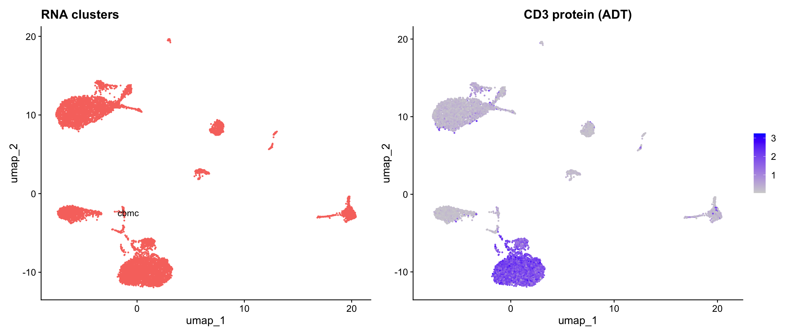
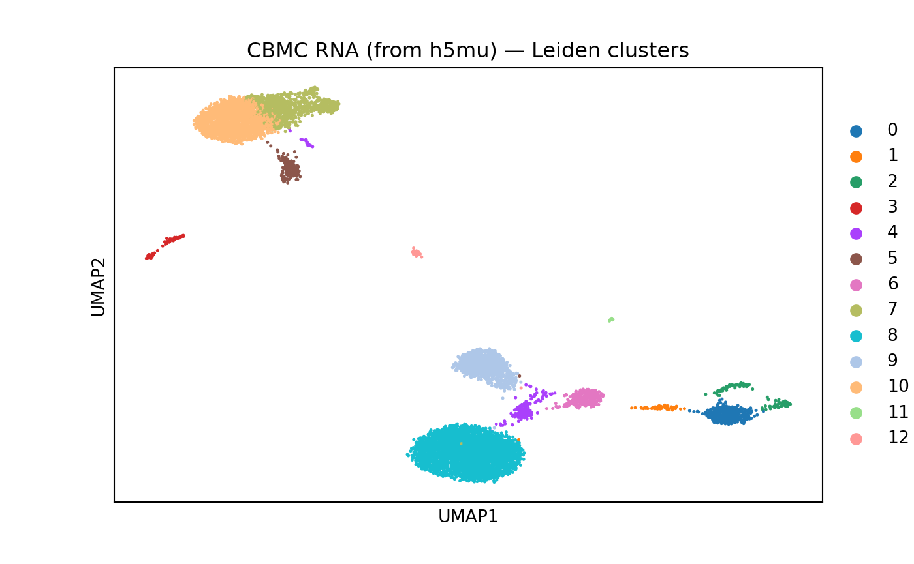

Introduction
The MuData
format (.h5mu) stores multimodal single-cell data —
multiple modalities (e.g., RNA + protein) in a single file with shared
cell annotations. This is the native format for muon in Python.
scConvert provides native h5mu read/write with no external dependencies (no MuDataSeurat or Python required):
-
writeH5MU(): Export a multi-assay Seurat object to h5mu, with automatic assay-to-modality name mapping. Works with Seurat V5 Assay5. -
readH5MU(): Load an h5mu file as a Seurat object, with automatic modality-to-assay name mapping
Create a multimodal Seurat object
We use the cbmc dataset from SeuratData — a CITE-seq
experiment with RNA and ADT (antibody-derived tag) assays:
library(SeuratData)
if (!"cbmc" %in% rownames(InstalledData())) {
InstallData("cbmc")
}
data("cbmc", package = "cbmc.SeuratData")
cbmc <- UpdateSeuratObject(cbmc)
# Remove ADT features that overlap with RNA (h5mu requires unique feature names per modality)
overlap <- intersect(rownames(cbmc[["ADT"]]), rownames(cbmc[["RNA"]]))
if (length(overlap) > 0) {
adt_keep <- setdiff(rownames(cbmc[["ADT"]]), overlap)
cbmc[["ADT"]] <- subset(cbmc[["ADT"]], features = adt_keep)
cat("Removed", length(overlap), "overlapping features from ADT\n")
}
#> Removed 4 overlapping features from ADT
cat("Assays:", paste(Assays(cbmc), collapse = ", "), "\n")
#> Assays: RNA, ADT
cat("Cells:", ncol(cbmc), "\n")
#> Cells: 8617
cat("RNA features:", nrow(cbmc[["RNA"]]), "\n")
#> RNA features: 20501
cat("ADT features:", nrow(cbmc[["ADT"]]), "\n")
#> ADT features: 6This object has two assays — RNA (gene expression) and ADT (surface protein) — measured on the same cells, making it ideal for h5mu.
Note: h5mu requires unique feature names across modalities. If your CITE-seq ADT panel has features that share names with RNA genes (e.g., CD3D), remove duplicates before saving.
Process and visualize
DefaultAssay(cbmc) <- "RNA"
cbmc <- NormalizeData(cbmc, verbose = FALSE)
cbmc <- FindVariableFeatures(cbmc, verbose = FALSE)
cbmc <- ScaleData(cbmc, verbose = FALSE)
cbmc <- RunPCA(cbmc, verbose = FALSE)
cbmc <- RunUMAP(cbmc, dims = 1:30, verbose = FALSE)
cbmc <- NormalizeData(cbmc, assay = "ADT", normalization.method = "CLR", verbose = FALSE)
library(patchwork)
p1 <- DimPlot(cbmc, label = TRUE, pt.size = 0.3) + NoLegend() + ggtitle("RNA clusters")
DefaultAssay(cbmc) <- "ADT"
p2 <- FeaturePlot(cbmc, features = "adt_CD3", pt.size = 0.3) + ggtitle("CD3 protein (ADT)")
DefaultAssay(cbmc) <- "RNA"
p1 + p2
Save with writeH5MU
writeH5MU() exports all assays to a single h5mu file.
Assay names are automatically mapped to standard MuData modality
names:
| Seurat Assay | h5mu Modality |
|---|---|
| RNA | rna |
| ADT | prot |
| ATAC | atac |
| Spatial | spatial |
| Other | lowercase name |
writeH5MU(cbmc, "cbmc_multimodal.h5mu", overwrite = TRUE)Inspect in Python
If you have muon installed, you can inspect the h5mu file:
import mudata as md
mdata = md.read_h5mu("cbmc_multimodal.h5mu")
print(mdata)
#> MuData object with n_obs × n_vars = 8617 × 20507
#> obs: 'orig.ident', 'nCount_RNA', 'nFeature_RNA', 'nCount_ADT', 'nFeature_ADT', 'rna_annotations', 'protein_annotations'
#> 2 modalities
#> rna: 8617 x 20501
#> var: 'vst.mean', 'vst.variance', 'vst.variance.expected', 'vst.variance.standardized', 'vst.variable'
#> obsm: 'X_pca', 'X_umap'
#> layers: 'counts'
#> prot: 8617 x 6
#> layers: 'counts'
print("\nModalities:", list(mdata.mod.keys()))
#>
#> Modalities: ['rna', 'prot']
for mod_name, mod in mdata.mod.items():
print(f" {mod_name}: {mod.n_obs} cells x {mod.n_vars} features")
#> rna: 8617 cells x 20501 features
#> prot: 8617 cells x 6 featuresscanpy on RNA modality
We can run standard scanpy preprocessing on the RNA modality extracted from the h5mu file:
import scanpy as sc
rna = mdata.mod["rna"].copy()
sc.pp.normalize_total(rna)
sc.pp.log1p(rna)
sc.pp.highly_variable_genes(rna, n_top_genes=2000)
sc.pp.pca(rna)
sc.pp.neighbors(rna)
sc.tl.umap(rna)
sc.tl.leiden(rna, flavor="igraph")
sc.pl.umap(rna, color="leiden", title="CBMC RNA (from h5mu) — Leiden clusters")
Load with readH5MU
readH5MU() reads the h5mu file back into a Seurat
object, reversing the modality name mapping:
| h5mu Modality | Seurat Assay |
|---|---|
| rna | RNA |
| prot | ADT |
| atac | ATAC |
| spatial | Spatial |
| Other | preserved |
cbmc_loaded <- readH5MU("cbmc_multimodal.h5mu")
cbmc_loaded
#> An object of class Seurat
#> 20507 features across 8617 samples within 2 assays
#> Active assay: RNA (20501 features, 0 variable features)
#> 2 layers present: counts, data
#> 1 other assay present: ADT
#> 2 dimensional reductions calculated: pca, umapreadH5MU() uses scConvert’s native reader — no
MuDataSeurat or Python required.
Verify round-trip preservation
cat("=== Original ===\n")
#> === Original ===
cat("Assays:", paste(Assays(cbmc), collapse = ", "), "\n")
#> Assays: RNA, ADT
cat("Cells:", ncol(cbmc), "\n")
#> Cells: 8617
cat("\n=== Loaded ===\n")
#>
#> === Loaded ===
cat("Assays:", paste(Assays(cbmc_loaded), collapse = ", "), "\n")
#> Assays: ADT, RNA
cat("Cells:", ncol(cbmc_loaded), "\n")
#> Cells: 8617
# Check metadata
cat("\nMetadata columns (original):", ncol(cbmc[[]]), "\n")
#>
#> Metadata columns (original): 7
cat("Metadata columns (loaded):", ncol(cbmc_loaded[[]]), "\n")
#> Metadata columns (loaded): 7Verify expression values
common_c <- intersect(colnames(cbmc), colnames(cbmc_loaded))
common_g <- intersect(rownames(cbmc[["RNA"]]), rownames(cbmc_loaded[["RNA"]]))
set.seed(42)
sc <- sample(common_c, min(200, length(common_c)))
sg <- sample(common_g, min(100, length(common_g)))
orig_vals <- as.numeric(GetAssayData(cbmc, assay = "RNA", layer = "counts")[sg, sc])
rt_vals <- as.numeric(GetAssayData(cbmc_loaded, assay = "RNA", layer = "counts")[sg, sc])
cat("RNA values identical:", identical(orig_vals, rt_vals), "\n")
#> RNA values identical: TRUE
cat("Max abs diff:", max(abs(orig_vals - rt_vals)), "\n")
#> Max abs diff: 0
# Check ADT assay too
adt_genes <- intersect(rownames(cbmc[["ADT"]]), rownames(cbmc_loaded[["ADT"]]))
if (length(adt_genes) > 0) {
adt_orig <- as.numeric(GetAssayData(cbmc, assay = "ADT", layer = "counts")[adt_genes, sc])
adt_rt <- as.numeric(GetAssayData(cbmc_loaded, assay = "ADT", layer = "counts")[adt_genes, sc])
cat("ADT values identical:", identical(adt_orig, adt_rt), "\n")
}
#> ADT values identical: TRUECustom modality name mapping
You can override the default mapping with assays (for
writeH5MU()) or assay.names (for
readH5MU()):
# Save with custom modality names (native writer)
writeH5MU(cbmc, filename = "cbmc_roundtrip.h5mu", overwrite = TRUE)
# Load with custom assay names
cbmc_custom <- readH5MU(
"cbmc_roundtrip.h5mu",
assay.names = c(rna = "RNA", prot = "Protein")
)
cat("Assays:", paste(Assays(cbmc_custom), collapse = ", "), "\n")
#> Assays: Protein, RNAConflict resolution
When a Seurat object has multiple assays that would map to the same
modality name, writeH5MU() automatically resolves the
conflict. For example, if you have both RNA and SCT assays (both map to
“rna” by default), SCT is remapped to “sct”:
| Seurat Assays | Modality Mapping |
|---|---|
| RNA, ADT | rna, prot (no conflict) |
| RNA, SCT, ADT | rna, sct, prot (SCT remapped) |
This ensures each modality has a unique name in the h5mu file.
Data mapping reference
writeH5MU: Seurat to h5mu
| Seurat Component | h5mu Location | Notes |
|---|---|---|
| Each assay | /mod/{modality}/ |
One AnnData per modality |
| Assay counts | /mod/{modality}/X |
Expression matrix |
| Assay metadata | /mod/{modality}/var |
Feature metadata |
| Cell metadata | /obs |
Global cell annotations |
| Reductions | /mod/{modality}/obsm/X_{name} |
Per-modality |
| Graphs | /mod/{modality}/obsp/{name} |
Per-modality |
Session Info
sessionInfo()
#> R version 4.5.2 (2025-10-31)
#> Platform: aarch64-apple-darwin20
#> Running under: macOS Tahoe 26.3
#>
#> Matrix products: default
#> BLAS: /System/Library/Frameworks/Accelerate.framework/Versions/A/Frameworks/vecLib.framework/Versions/A/libBLAS.dylib
#> LAPACK: /Library/Frameworks/R.framework/Versions/4.5-arm64/Resources/lib/libRlapack.dylib; LAPACK version 3.12.1
#>
#> locale:
#> [1] en_US.UTF-8/en_US.UTF-8/en_US.UTF-8/C/en_US.UTF-8/en_US.UTF-8
#>
#> time zone: America/Indiana/Indianapolis
#> tzcode source: internal
#>
#> attached base packages:
#> [1] stats graphics grDevices utils datasets methods base
#>
#> other attached packages:
#> [1] patchwork_1.3.2 ggplot2_4.0.2
#> [3] scConvert_0.1.0 Seurat_5.4.0
#> [5] SeuratObject_5.3.0 sp_2.2-1
#> [7] stxKidney.SeuratData_0.1.0 stxBrain.SeuratData_0.1.2
#> [9] ssHippo.SeuratData_3.1.4 pbmcref.SeuratData_1.0.0
#> [11] pbmcMultiome.SeuratData_0.1.4 pbmc3k.SeuratData_3.1.4
#> [13] panc8.SeuratData_3.0.2 cbmc.SeuratData_3.1.4
#> [15] SeuratData_0.2.2.9002
#>
#> loaded via a namespace (and not attached):
#> [1] RColorBrewer_1.1-3 jsonlite_2.0.0 magrittr_2.0.4
#> [4] spatstat.utils_3.2-2 farver_2.1.2 rmarkdown_2.30
#> [7] fs_1.6.7 ragg_1.5.0 vctrs_0.7.1
#> [10] ROCR_1.0-12 spatstat.explore_3.7-0 htmltools_0.5.9
#> [13] sass_0.4.10 sctransform_0.4.3 parallelly_1.46.1
#> [16] KernSmooth_2.23-26 bslib_0.10.0 htmlwidgets_1.6.4
#> [19] desc_1.4.3 ica_1.0-3 plyr_1.8.9
#> [22] plotly_4.12.0 zoo_1.8-15 cachem_1.1.0
#> [25] igraph_2.2.2 mime_0.13 lifecycle_1.0.5
#> [28] pkgconfig_2.0.3 Matrix_1.7-4 R6_2.6.1
#> [31] fastmap_1.2.0 fitdistrplus_1.2-6 future_1.69.0
#> [34] shiny_1.13.0 digest_0.6.39 tensor_1.5.1
#> [37] RSpectra_0.16-2 irlba_2.3.7 textshaping_1.0.4
#> [40] labeling_0.4.3 progressr_0.18.0 spatstat.sparse_3.1-0
#> [43] httr_1.4.8 polyclip_1.10-7 abind_1.4-8
#> [46] compiler_4.5.2 bit64_4.6.0-1 withr_3.0.2
#> [49] S7_0.2.1 fastDummies_1.7.5 MASS_7.3-65
#> [52] rappdirs_0.3.4 tools_4.5.2 lmtest_0.9-40
#> [55] otel_0.2.0 httpuv_1.6.16 future.apply_1.20.2
#> [58] goftest_1.2-3 glue_1.8.0 nlme_3.1-168
#> [61] promises_1.5.0 grid_4.5.2 Rtsne_0.17
#> [64] cluster_2.1.8.2 reshape2_1.4.5 generics_0.1.4
#> [67] hdf5r_1.3.12 gtable_0.3.6 spatstat.data_3.1-9
#> [70] tidyr_1.3.2 data.table_1.18.2.1 spatstat.geom_3.7-0
#> [73] RcppAnnoy_0.0.23 ggrepel_0.9.7 RANN_2.6.2
#> [76] pillar_1.11.1 stringr_1.6.0 spam_2.11-3
#> [79] RcppHNSW_0.6.0 later_1.4.8 splines_4.5.2
#> [82] dplyr_1.2.0 lattice_0.22-9 bit_4.6.0
#> [85] survival_3.8-6 deldir_2.0-4 tidyselect_1.2.1
#> [88] miniUI_0.1.2 pbapply_1.7-4 knitr_1.51
#> [91] gridExtra_2.3 scattermore_1.2 xfun_0.56
#> [94] matrixStats_1.5.0 stringi_1.8.7 lazyeval_0.2.2
#> [97] yaml_2.3.12 evaluate_1.0.5 codetools_0.2-20
#> [100] tibble_3.3.1 cli_3.6.5 uwot_0.2.4
#> [103] xtable_1.8-8 reticulate_1.45.0 systemfonts_1.3.1
#> [106] jquerylib_0.1.4 dichromat_2.0-0.1 Rcpp_1.1.1
#> [109] globals_0.19.1 spatstat.random_3.4-4 png_0.1-8
#> [112] spatstat.univar_3.1-6 parallel_4.5.2 pkgdown_2.2.0
#> [115] dotCall64_1.2 listenv_0.10.1 viridisLite_0.4.3
#> [118] scales_1.4.0 ggridges_0.5.7 purrr_1.2.1
#> [121] crayon_1.5.3 rlang_1.1.7 cowplot_1.2.0